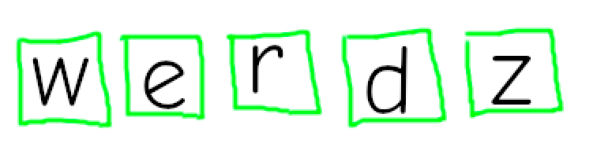
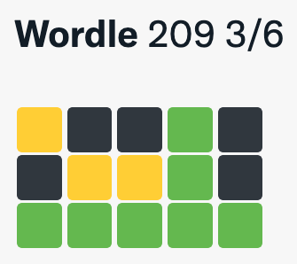

twirdle <- function(tweets) {
g <- "\U1F7E9"
o <- "\U1F7E7"
y <- "\U1F7E8"
blu <- "\U1F7E6"
bla <- "\U2B1B"
w <- "\U2B1C"
rx_all <- paste(g, o, y, blu, bla, w, sep = "|")
rx_right <- paste(g, o, sep = "|")
rx_place <- paste(y, blu, sep = "|")
rx_wrong <- paste(bla, w, sep = "|")
rx_color <- paste(o, blu, sep = "|")
tweets$meta <- regexpr(
"Wordle \\d{1,} [\\d{1}|X]/\\d{1}",
tweets$text,
perl = TRUE
)
tweets$meta <- setNames(
tweets$meta,
ifelse(tweets$meta < 0, FALSE, TRUE)
)
tweets$meta <- ifelse(
names(tweets$meta),
regmatches(tweets$text, tweets$meta),
NA_character_
)
tweets <- tweets[!is.na(tweets$meta), ]
tweets$edition <- as.numeric(
regmatches(
tweets$meta,
regexpr("\\d{1,}", tweets$meta)
)
)
tweets$attempts <- regmatches(
tweets$meta,
regexpr("[\\d{1}|X](?=/)", tweets$meta, perl = TRUE)
)
tweets$attempts <- ifelse(
tweets$attempts == "X",
NA_character_,
tweets$attempts
)
tweets$attempts <- as.numeric(tweets$attempts)
tweets$allowed <- as.numeric(
regmatches(
tweets$meta,
regexpr("(?<=/)\\d{1}", tweets$meta, perl = TRUE)
)
)
tweets$grid <- regmatches(
tweets$text,
gregexpr(rx_all, tweets$text)
)
tweets$grid <- lapply(
tweets$grid,
function(x) paste(x, collapse = "")
)
tweets$colorblind <- ifelse(
grepl(rx_color, tweets$grid), TRUE, FALSE
)
tweets$mode <- ifelse(
grepl(bla, tweets$grid), "dark",
ifelse(grepl(w, tweets$grid), "light", "unknown")
)
tweets$grid <- gsub(rx_right, "G", tweets$grid)
tweets$grid <- gsub(rx_place, "Y", tweets$grid)
tweets$grid <- gsub(rx_wrong, "-", tweets$grid)
tweets[, c("edition", "attempts", "allowed", "mode",
"colorblind", "grid", "status_id")]
}
tl;dr
Two toy R functions for playing with Wordle results: twirdle() extracts gameplay data from tweets, and eldrow() finds potential prior guesses given the answer.
Note
The Twitter API is pretty borked as of mid-2023, so the functions in this post are unlikely to work anymore.
What’s the Wordle?
Nothing is more zeitgeisty right now than Wordle, a once-a-day web-based five-letter-word-guessing puzzle-logic game.
The app lets you copy your results in a consistent format for pasting into a tweet or whatever.

It begins with a string of meta information, ‘Wordle X Y/Z’, where X is the edition number, Y is the attempts taken and Z is the maximum allowed guesses. Then there’s a grid of coloured emoji squares, where each row represents a guessed word and each emoji a letter.
Green emojis (orange in colorblind mode) represent a letter in the correct place, yellow (blue in colorblind mode) in the wrong place and white for an incorrect letter (or black if playing in dark mode). The emojis obscure your guesses so that people can see how well you did without spoiling the answer.
Folks have already put together some neat R tools, like solvers and ways to play in the console or in other languages. See mikefc’s {wordle} R package and Pachá’s Shiny app, for example.
Wordle up
Surprise: I haven’t actually played the game.1
But that didn’t stop me from writing a couple of modest functions to practice my regex and base-R skills: twirdle() and eldrow().2
As ever, I can call them ‘toy’ functions and get away without proper error-checking and code optimisation.
twirdle
The consistent Wordle template makes it straightforward to extract people’s results from tweets. I’ve made the twirdle() function to do this.3
twirdle() makes use of regular expressions and functions like regmatches() and regexpr() to extract:
- the Wordle
editionnumber, e.g. ‘206’ - the
attempts required, e.g. ‘4’, but also failures symbolised with ‘X’ - the maximum
allowedattempts (max), i.e. ‘6’ - whether the user was playing in light or dark
mode - whether the user was using
colorblindmode - a string of characters representing the emoji
grid, e.g."YG----G-GYGGGGG", to symbolise a correct guess (i.e. aGreen emoji), a correct letter but in the wrong place (i.e.Yellow), and a miss (-) - the tweet
status_idso you can visit the original tweets
Code
Click for the full twirdle() function definition
I also put the code for the function in a GitHub Gist.
Example
To give an example of twirdle() in action, let’s first grab a small number of tweets using the {rtweet} package by Mike Kearney. I think it’s best to supply the query string of search_tweets() with the word ‘Wordle’ and at least one white or black emoji (signifying an incorrect letter).4
tweets <- rtweet::search_tweets(
q = "Wordle \U2B1B OR \U2B1C",
n = 10, # return 10 tweets
include_rts = FALSE # no retweets
)And now we can pass the returned dataframe of tweets to twirdle(). It outputs a row per tweet, but there may be fewer tweets than we asked for because the content doesn’t conform to the output provided by Wordle. Sometimes people add their own comments into the results, disrupting the expected format. There’s also a Spanish version that has ‘(ES)’ in the meta information that we’re going to exclude for our purposes.
Note that anyone who didn’t complete the puzzle in six tries gets a score of ‘X/6’, which is returned as NA_real_ in the attempts column.
twirdle(tweets)# A tibble: 7 × 7
edition attempts allowed mode colorblind grid status_id
<dbl> <dbl> <dbl> <chr> <lgl> <chr> <chr>
1 213 5 6 light FALSE GY--YGGG--GGG--GGG-… 14834445690229…
2 213 3 6 dark FALSE Y-----YY--GGGGG 14834445680161…
3 213 6 6 dark FALSE --Y-----YG-G--G--G-… 14834445678988…
4 213 6 6 light FALSE -----Y------Y-G-G--… 14834445674540…
5 213 NA 6 light FALSE ---Y---G-YGGG--GGG-… 14834445662083…
6 213 5 6 dark FALSE -G------YYGGG--GGG-… 14834445661120…
7 213 3 6 dark FALSE ----Y--GY--GG--GGG-… 14834445648075…You could use this to do a number of things, like calculate the mean number of attempts for each day’s puzzle, look for guess patterns at scale, or maybe see whether dark-mode users are more skilled than light-mode users.
eldrow
Of course, the whole purpose of sharing an encoded emoji grid is to prevent spoilers. No-one reading your result can see the answer or your guesses.
But, if you do know the answer, could you backwards-engineer prior guesses from the emoji grid?
Introducing eldrow(),5 which does exactly this with some help from mikefc’s {wordle} package for filtering from the Wordle wordlist.6
You pass to it the answer and the encoding of the last guess in the form "Y-GY-". As per the twirdle() output, the characters G, Y and - refer to a letter in the right place, wrong place, or not in the word. The function returns a vector of all the possible words given the guess and the answer.
One thing it doesn’t deal with is whether people are playing in ‘hard mode’, where ‘any revealed hints must be used in subsequent guesses’. I think you could infer if someone was playing this way, but you could never be completely sure.
Code
Click for the full eldrow() definition
eldrow <- function(guess, answer, words = wordle::wordle_dict){
answer <- tolower(answer)
guess <- toupper(guess)
guess_chars <- strsplit(guess, "")[[1]]
answer_chars <- strsplit(answer, "")[[1]]
exact <- ifelse(guess_chars == "G", answer_chars, ".") |>
paste0(collapse = "")
wrong_spot <- gsub(
"\\.", "", ifelse(guess_chars == "Y", answer_chars, ".")
)
exact_chars <- regmatches(exact, gregexpr("\\w", exact))[[1]]
correct_chars_table <- table(
c(exact_chars, wrong_spot[wrong_spot != ""])
)
min_count <- as.vector(correct_chars_table)
names(min_count) <- names(correct_chars_table)
possibles <- wordle::filter_words(
words, exact, wrong_spot, min_count, min_count
)
possibles <- possibles[which(possibles != answer)]
possibles[order(possibles)]
}I also put the code for this in a GitHub Gist.
Example
So, let’s say someone took three attempts at the word ‘shirt’7 and their first and second guesses gave encodings of "YGG--" then "-GGG-".
We can start by passing the answer and the encoding for the prior guess.
guess_2 <- eldrow(guess = "-GGG-", answer = "shirt")
guess_2 [1] "chirk" "chirl" "chirm" "chiro" "chirp" "chirt" "chiru" "shire" "shirk"
[10] "shirs" "third" "thirl" "whirl" "whirs"Okay, so logicically they could have guessed any of these 14 options before their final, correct guess.
Naturally, we can extrapolate one step further back and infer the earlier potential guesses.
You can iterate over these 14 possible words as the answer argument to eldrow(), setting the guess argument to the encoding for the previous attempt (i.e. "YGG--" was the first guess in our example).
guesses_1_2 <- lapply(
guess_2,
\(x) eldrow("YGG--", x)
) |>
lapply(\(x) x[which(x != "shirt")]) |>
setNames(guess_2)
str(guesses_1_2)List of 14
$ chirk: chr "thick"
$ chirl: chr "thick"
$ chirm: chr "thick"
$ chiro: chr "thick"
$ chirp: chr "thick"
$ chirt: chr "thick"
$ chiru: chr "thick"
$ shire: chr [1:22] "chias" "chibs" "chics" "chiks" ...
$ shirk: chr [1:22] "chias" "chibs" "chics" "chiks" ...
$ shirs: chr [1:22] "chias" "chibs" "chics" "chiks" ...
$ third: chr [1:13] "ahint" "chirt" "chits" "shift" ...
$ thirl: chr [1:13] "ahint" "chirt" "chits" "shift" ...
$ whirl: chr(0)
$ whirs: chr(0)The output is a list with elements containing the potential first guesses and is named for each of the potential second guesses. So, logically, a possible set of guesses by this imaginary person was ‘shift’ then ‘third’ then ‘shirts’.
Of course, you can eliminate any potential second guesses that failed to yield a potential first guess, like ‘whirl’ in this example.
You’ll also notice a number of the potential first guesses are the same word. The more they appear, the more likely that word is to have been the actual starting guess, I suppose?
words <- c()
for (i in guesses_1_2) {
words <- c(words, i)
}
counts <- as.data.frame(
table(words),
responseName = "n"
)
counts$total <- sum(counts$n)
counts$percent <- round(100 * (counts$n / counts$total), 1)
likeliest <- counts[order(-counts$percent), ]
rownames(likeliest) <- NULL
head(likeliest, 3) words n total percent
1 thick 7 99 7.1
2 chits 5 99 5.1
3 whist 5 99 5.1So, purely on the basis of this frequency, ‘thick’ was most likely to be the first guess in this contrived example. You might want to consider how likely someone is to actually submit some of these words, given their obscurity.8
Hurdle?
I hope you weren’t expecting anything more from this post. Maybe consider some meme variants, like Curdle, Birdle, Tetris, or this absolute banger.
Okay, show’s over, you can stop the Wordling now.
Environment
Session info
Last rendered: 2023-07-17 18:17:30 BSTR version 4.3.1 (2023-06-16)
Platform: aarch64-apple-darwin20 (64-bit)
Running under: macOS Ventura 13.2.1
Matrix products: default
BLAS: /Library/Frameworks/R.framework/Versions/4.3-arm64/Resources/lib/libRblas.0.dylib
LAPACK: /Library/Frameworks/R.framework/Versions/4.3-arm64/Resources/lib/libRlapack.dylib; LAPACK version 3.11.0
locale:
[1] en_US.UTF-8/en_US.UTF-8/en_US.UTF-8/C/en_US.UTF-8/en_US.UTF-8
time zone: Europe/London
tzcode source: internal
attached base packages:
[1] stats graphics grDevices utils datasets methods base
loaded via a namespace (and not attached):
[1] htmlwidgets_1.6.2 compiler_4.3.1 fastmap_1.1.1 cli_3.6.1
[5] tools_4.3.1 htmltools_0.5.5 rstudioapi_0.15.0 yaml_2.3.7
[9] rmarkdown_2.23 knitr_1.43.1 jsonlite_1.8.7 xfun_0.39
[13] digest_0.6.31 rlang_1.1.1 fontawesome_0.5.1 evaluate_0.21 Footnotes
I am simply manipulating you for clicks.↩︎
Us pros call this ‘function-name driven development’, or FNDD. It’s very simple, you just choose a funny function name and work backwards from there.↩︎
DO YOU SEE IT IS LIKE ‘TWITTER’ AND ‘WORDLE’ FUSED TOGETHER, LOL.↩︎
I initially put five green emoji in the query string, since all successful Wordles end this way. But then you miss out those people who didn’t get a correct answer by the sixth guess.↩︎
DO YOU SEE IT IS LIKE ‘WORDLE’ BACKWARDS? HA HA HA.↩︎
This is a little manoeuvre I like to call ‘mikefc-Driven Development’ (MDD). See a very recent post on this blog for an example.↩︎
No spoilers here. I have no idea if this word has ever been a correct answer in Wordle to date.↩︎
‘Thick Chitswhist’ is a Star Wars Expanded Universe character, I think?↩︎
Reuse
CC BY-NC-SA 4.0